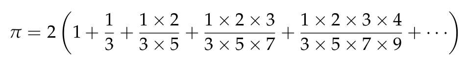
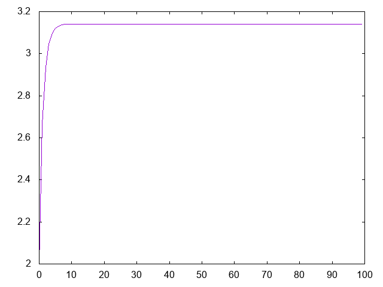

Cálculo de pi mediante la fórmula de Beeler
El pasado 12 de marzo se publicó en Twitter un mensaje con una fórmula de Beeler para el cálculo de pi: 
Los primeros valores son
λ> 2*1 2 λ> 2*(1+1/3) 2.6666666666666665 λ> 2*(1+1/3+(1*2)/(3*5)) 2.933333333333333 λ> 2*(1+1/3+(1*2)/(3*5)+(1*2*3)/(3*5*7)) 3.0476190476190474 λ> 2*(1+1/3+(1*2)/(3*5)+(1*2*3)/(3*5*7)+(1*2*3*4)/(3*5*7*9)) 3.098412698412698
Definir las funciones
aproximacionPi :: Int -> Double grafica :: [Int] -> IO ()
tales que
- (aproximacionPi n) es la n-ésima aproximación de pi con la fórmula de Beeler. Por ejemplo,
aproximacionPi 0 == 2.0
aproximacionPi 1 == 2.6666666666666665
aproximacionPi 2 == 2.933333333333333
aproximacionPi 3 == 3.0476190476190474
aproximacionPi 4 == 3.098412698412698
aproximacionPi 10 == 3.141106021601377
aproximacionPi 100 == 3.1415926535897922
pi == 3.141592653589793
- (grafica xs) dibuja la gráfica de las k-ésimas aproximaciones de pi para k en xs. Por ejemplo, (grafica [0..99]) dibuja 